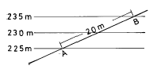
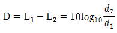
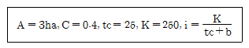
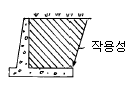
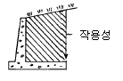
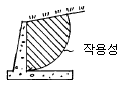
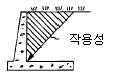
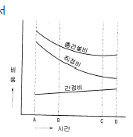

조경기사 (2004-09-05 기출문제)
1과목: 조경사
1. 돌(石)을 이용한 점경물(點景物)이 부가되어 일본정원의 면모를 크게 바꾼 모모야먀(桃山)시대의 조경 기법은?
- 축산 임천식(築山林泉式)정원
- 고산수(枯山水)정원
- 다정(茶庭)정원
- 침전조(寢殿造)정원
(정답률: 75%)

2. 고대 로마시대의 폼페이 지방의 주택에서 3개의 정원 공간이 나타나고 있다. 이에 해당되지 않는 공간은?
- 임플루빔(Impluvium)
- 아트리움(Atrium)
- 지스터스(Xystus)
- 페리스틸리움(Peristylium)
(정답률: 83%)
3. 조선시대 안채 뒤의 경사면을 계단식으로 다듬어 장대석(長台石)으로 굳혀 놓은 곳에 운치있는 김새의 자연석을 앉혀 즐기는 풍습이 있었다. 그 당시 이 자연석을 무엇이라고 불렀는가?
- 괴석(怪石)
- 수석(水石)
- 세심석(洗心石)
- 치석(置石)
(정답률: 80%)
4. 조선시대에 가장 흔히 조성된 연못의 형태는?
- 둥근형
- 네모난형
- 자연형
- 복합형
(정답률: 79%)
5. 영국의 스토우원(Stowe Garden)을 풍경식 정원으로 완성시킨 3인의 조경가는?
- 브릿지맨, 켄트, 브라운
- 켄트, 브라운, 렙턴
- 포오프, 브릿지맨, 브라운
- 호오, 브릿지맨, 켄트
(정답률: 85%)
6. 중국의 북경에 있는 원명원(圓明園)에 관한 설명 중 옳은 것은?
- 강희(康熙)황제가 꾸며 공주에게 넘겨준 것이다.
- 원명원의 동쪽에는 만춘원이 있고 남동쪽에는 장춘원이 있다.
- 뜰(園)안에는 대분천(噴泉)을 중심으로 하는 프랑스식 정원이 꾸며져 있다.
- 1860년에 일본군에 의하여 파괴 되었다.
(정답률: 82%)
7. 고구려 안학궁원의 정원 구성 요소로만 짝지어진 것은?
- 경석, 인공축산, 섬, 못
- 못, 인공축산, 경석, 삼신선도
- 삼신선도, 경석, 계류, 못
- 경석, 석가산, 계류, 못
(정답률: 50%)
8. 오스트리아의 셴브런(Sh曲nbrunn), 독일의 헤렌하우젠(Herrenhausen)궁원들과 스페인의 라 그란쟈(La Granja)등은 다음 어느 양식의 영향을 많이 받았는가?
- 바로크식 양식
- 고전주의 양식
- 노단 건축식 양식
- 자연 풍경식
(정답률: 67%)
9. 서구와 동양문화의 혼합으로 이루워진 캘리포니아 스타일(California style)의 대표적 조경가가 아닌 사람은?
- 토마스 쳐치(Thomas Church)
- 가렛 에크보(Garrett Eckbo)
- 로렌스 헬프린(Lorence Helprin)
- 맥하그(Ian Mcharg)
(정답률: 65%)
10. 다음 중 물풍금(Water Organ)이 있었던 것으로 유명한 로마 근교의 빌라는?
- 빌라마다마(Villa Madama)
- 빌라에스테(Villa d'Este)
- 빌라랑테(Villa Lante)
- 빌라메디치(Villa Medici)
(정답률: 65%)
11. 다음 중 프랑스의 풍경식 정원에 해당하는 것은?
- 폰텐블로우(Fontainebleau)
- 에름논빌(Ermenonville)
- 생클루(Saint-Cloud)
- 카세르타궁원(Caserta)
(정답률: 73%)
12. 다음 일본의 작정기에 대한 설명으로 옳지 않은 것은?
- 정원 전체의 땅가름, 연못, 섬, 입석, 작천 등 정원에 관한 내용이다.
- 이론적인 것에서부터 시공면까지 상세하게 기록 되어 있다.
- 일본에서 정원 축조에 관한 가장 오랜 비전서이다.
- 회유식 정원의 형태와 의장에 관한 것이다.
(정답률: 65%)
13. 다음은 유럽 조경사의 각 시대를 주도권의 관점에서 특징적으로 구분하고 있다. 짝지움이 잘못된 것은?
- 15세기 - 이태리 Florentine
- 16세기 - 이태리 Roman Villa
- 17세기 - 불란서 평면기하학식 정원
- 18세기 - 독일 구성식 정원
(정답률: 54%)
14. 16세기 페르시아 압바스(Abbas)왕이 이스파한(Isfahan)에 만든 공원 광장은?
- 차하르 바그(Chahar-bagh)
- 마이단(Maidan)
- 40주궁(Cheher Sutun)
- 아샤발 바그(Achabal-bagh)
(정답률: 68%)
15. 조선시대 별서형의 임천정원이 생겨난 것은 다음 중 어느 사상의 영향인가?
- 신선사상
- 불가사상
- 유가사상
- 풍수사상
(정답률: 61%)
16. 신라의 정원 유적인 안압지에서 건물지(建物址)가 아닌 곳의 하단 물가는 어떤 수법으로 굳혀 놓았는가?
- 자연석으로 자연스럽게 보이도록 굳혀 놓았다.
- 자연석과 거의 네모난 돌을 섞어 쌓아 굳혀 놓았다.
- 거의 네모난 돌로 수직을 이루도록 쌓아 굳혀 놓았다.
- 흙으로 자연 그대로의 완경사를 이루도록 해 놓았다.
(정답률: 25%)
17. 다음 중 옥호정 정원의 설명으로 적합하지 않은 것은?
- 우리나라 사가(私家)정원의 대표적인 예이다.
- 김조순이 꾸며 즐기었던 별장이다.
- 현재 삼청동에 위치해 있다.
- 이 정원은 후원이 없는 것이 그 특색이다.
(정답률: 42%)
18. 중국 정원의 특징을 적은 것으로 잘못된 것은?
- 디자인면에 있어서는 직선을 배제하고 자연곡선을 쓰며 조화를 기본으로 한다.
- 조경재료로서 괴석을 많이 도입하여 인공산을 만들고 또 동굴을 만든다.
- 건축물로 둘러쌓인 안뜰은 소건축물, 괴석, 못 등으로 고밀도 공간을 형성한다.
- 다리는 무지개다리(홍교)나 곡절(曲折)하는 직선적인 다리를 만든다.
(정답률: 58%)
19. 고대 이집트 정원에 관한 다음 설명 중 옳지 않은 것은?
- 수분 공급 때문에 정원은 정형적인 형태를 취하고 수목은 열식(列植)하였다.
- 높은 울담으로 둘러싸고 사각형의 침상지(沈床池)를 정원 주요부에 배치하였다.
- 대추야자, 시커모어, 무화과 등을 정원식물로 사용 하였다.
- 「길가메시 이야기」에 이집트 정원에 대한 자세한 기록이 나온다.
(정답률: 72%)
20. 조선시대 유교의 우주관에 의해 조성된 연못은?
- 강원도 강릉시 선교장의 활래정 지원
- 전남 보길도의 부용동 세연정 지원
- 경남 함안군 무기리의 하환정 국담원
- 서울 창덕궁의 부용정 지원
(정답률: 65%)
2과목: 조경계획
21. 아파트 단지의 경계를 나타내는 담장은 주민들에게 상징적으로 소유의식을 주는 방법의 하나라 볼 수 있다. 이는 환경심리학의 어떤 연구 결과가 응용된 예인가?
- 개인적 공간(Personal Space)
- 영역성(Territoriality)
- 혼잡(Crowding)
- 반달리즘(Vandalism)
(정답률: 60%)
22. 레크리에이션 계획에서 사용되고 있는 표준치(standard)에 대한 설명 중 옳지 않은 것은?
- 넓게는 계획기준, 좁게는 원단위(原單位)라 한다.
- 계획이나 의사결정 과정에서 지침 또는 기준이 된다.
- 명확한 방법론에 기초해 작성되었다.
- 목표의 달성 정도를 평가하는데 도움이 된다.
(정답률: 53%)
23. 기존의 레크레이션으로 기회에 참여 또는 소비하고 있는 수요를 무엇이라 하는가?
- 잠재수요
- 유도수요
- 유효수요
- 표출수요
(정답률: 48%)
24. 기본계획안(Masterplan)에 포함되지 않아도 되는 내용은?
- 토지이용계획
- 교통동선계획
- 시설물배치계획
- 정지계획
(정답률: 68%)
25. 오픈스페이스 주요 계획개념 중 계기(繼起)(Sequence)에 해당하는 내용은?
- 격자형도시에서 가변성을 증가시킴.
- 도시내에 흐르는 작은 하천 및 하천을 복개한 도로, 보행전용도로 등이 소재가 됨.
- 통일성이 결여된 여러 구성요소 중 가장 크거나 시각적으로 가장 지배적인 요소를 초점으로 설정함.
- 각 오픈스페이스마다 독립되고 완결되는 활동과 체험을 선형으로 연결해 총체적인 체험을 갖도록 함.
(정답률: 62%)
26. 다음 내용 중 오픈스페이스의 체계를 구성함에 있어서 유용한 계획개념에 해당하지 않는 것은?
- 결절화
- 위요
- 중첩
- 다핵화
(정답률: 65%)
27. 다음 중 오픈스페이스의 역할로 가장 부적절한 것은?
- 도시개발의 조절
- 도시환경의 질 개선
- 시민생활의 질 개선
- 문화생활의 촉진
(정답률: 50%)
28. 일정지역의 항공사진을 촬영할 때는 일정 높이에서 평행하게 왕복하며 촬영하게 되는데 전방으로 몇 % 겹치도록하며, 측방으로 몇 % 겹치도록 촬영하는 것이 좋은가?
- 전방 30%, 측방 60%
- 전방 50%, 측방 50%
- 전방 60%, 측방 20 ~ 30%
- 전방 30%, 측방 20 ~ 30%
(정답률: 53%)
29. 도시공원법의 광역권근린공원이 그 기능을 충분히 발휘할 수 있는 장소의 설치 규모는 얼마인가?
- 1,000m2 이상
- 10,000m2 이상
- 100,000m2 이상
- 1,000,000m2 이상
(정답률: 34%)
30. 아파트에 설치되는 다음 시설 중 향(向)의 영향을 크게 받지 않는 것은?
- 놀이터
- 휴게소
- 노인정
- 광장
(정답률: 44%)
31. 다음 중 자연공원에 속하지 않는 것은?
- 국립공원
- 도립공원
- 묘지공원
- 군립공원
(정답률: 70%)
32. 다음의 혼잡과 관련된 서술 중 잘못된 것은?
- 혼잡은 기본적으로 밀도에 관계되는 개념이다.
- 물리적 밀도가 높아도 사회적 밀도는 낮을 수 있다.
- 사회적 밀도는 얼마나 많은 사회적 접촉이 일어나는 가 이다.
- 고밀도에서는 저밀도에서 보다 타인에 대한 호감이 높아진다.
(정답률: 46%)
33. 자연환경 조사 중 토양 단면조사의 설명으로 틀린 것은?
- 토양단면조사는 식물의 생장에 가장 중요한 환경인자인 토양의 수직적 구성 및 형태를 분석한다.
- A층은 광물토양의 최상층으로 외부환경과 접촉되어 그 영향을 직접 받는 층이다.
- B층은 대부분의 토양수를 보유하는 층으로 식물의 뿌리 발달에 가장 큰 영향을 미치는 층이다.
- C층은 외부 환경으로부터 토양 생성 작용을 받지못하고 단지 광물질이 풍화된 층이다.
(정답률: 34%)
34. 계획안을 작성할 때 주어진 시간 및 비용의 범위 내에서 얻을 수 있는 최선의 안(案)을 가리키는 것은?
- 규범적인 안(Normative Solution)
- 최적 안(Optimal Solution)
- 만족스러운 안(Satisficing Solution)
- 창조적인 안(Creative Solution)
(정답률: 30%)
35. 도시계획구역안에 거주하는 주민 1인당 도시공원 최소 면적 기준은 어느 정도인가?
- 6m2 이상
- 9m2 이상
- 12m2 이상
- 15m2 이상
(정답률: 57%)
36. 다음 중 조경계획을 할 경우 등고선도를 갖고 파악되지 않는 것은?
- 자연배수로
- 경사도
- 유역(流域)
- 식생현황상태
(정답률: 63%)
37. 국토의계획및이용에관한법률에서 정한 용도지역안에서 도시지역의 건축물의 용적률에 대한 범위 가운데 알맞지 않은 것은?
- 주거지역에 있어서는 300퍼센트 이하
- 상업지역에 있어서는 1,500퍼센트 이하
- 공업지역에 있어서는 400퍼센트 이하
- 녹지지역에 있어서는 100퍼센트 이하
(정답률: 20%)
38. 다음 중 공원녹지계획시 가장 중요한 고려사항에 해당 하는 것은?
- 시설 위주의 계획
- 대형 위주의 계획
- 공급 위주의 계획
- 접근성 위주의 계획
(정답률: 73%)
39. 조경계획가의 일반적인 활동영역과 가장 거리가 먼 것은?
- 관리계획
- 환경항목조사(Environmental Inventory)
- 적지분석(Site Selection)
- 환경영향예측
(정답률: 27%)
40. 다음 그림에서 두지점 A와 B사이는 몇[%] 경사지역인가?

- 1/√3 × 100[%]
- √3 × 100[%]
- √2 × 100[%]
- 1/√2 × 100[%]
(정답률: 24%)
3과목: 조경설계
41. 다음 선의 종류 중 표현이 다른 것은?
- 치수선
- 숨은선
- 해칭선
- 인출선
(정답률: 57%)
42. 서울지역에서 축구장의 배치 방법 중 가장 옳은 것은?
- 장축을 남북 방향으로 길게 배치한다.
- 장축을 동서 방향으로 길게 배치한다.
- 장축을 북서-남동 방향으로 길게 배치한다.
- 장축을 북동-남서 방향으로 길게 배치한다.
(정답률: 62%)
43. 세부 상세도 작성시 반드시 고려되어야 하는 항목이 아닌 것은?
- 치수
- 방위
- 스케일
- 단면도
(정답률: 59%)
44. "서로 접근시켜서 놓여진 두개의 색을 동시에 볼 때에 생기는 색 대비" 에 적용되는 것은?
- 색 대비
- 동시대비
- 계시대비
- 유도색
(정답률: 62%)
45. 다음 중 야영장을 설계하고자 할 때 부지 선정에 관한 요건으로서 가장 관련이 적은 것은?
- 강풍으로부터 보호받을 수 있는 곳
- 비· 눈 등의 피해가 없는 곳
- 교통이 편리한 곳
- 완경사 지역이며 배수가 양호한 곳
(정답률: 55%)
46. 다음의 설계과정을 설명한 것 중 맞는 것은?
- 대지의 조사분석 - 설계개념의 설정 - 기본설계 - 실시설계
- 설계개념의 설정 - 대지의 조사분석 - 기본설계 - 실시설계
- 대지의 조사분석 - 기본설계 - 설계개념의 설정 - 실시설계
- 대지의 조사분석- 기본설계 - 실시설계 - 설계개념의 설정
(정답률: 60%)
47. 묘지공원 설계시 유의사항 중 적절하지 않은 것은?
- 명쾌하고 경관이 아름다운 분위기를 갖추도록 한다.
- 분묘의 규격은 4m2, 6m2, 12m2, 16m2등이 있으나, 이중 4m2와 6m2가 전체의 60%이상을 차지하도록 배치한다.
- 개인묘의 경우 봉분의 높이는 1.5m 내외로 한다.
- 수종은 목적과 기능에 적합하며 기후, 토질 등 지리적 조건에 맞는 수종을 선정한다.
(정답률: 10%)
48. 일반적 도시내 공간에서 거리에 따른 식별정도의 관계로 틀린 것은?
- 대화할 수 있는 거리 - 3m
- 얼굴표정을 식별할 수 있는 거리 - 12m
- 동작을 구분하는 거리 - 50m
- 사람을 식별하는 최대거리 - 1,200m
(정답률: 6%)
49. 강관의 내경이 30mm, 외경이 33mm, 길이 L인 것의 규격 표시가 옳은 것은? (강구조물에서)
- ø 30-L
- ø 33-L
- ø 33× 3-L
- 30-33-L
(정답률: 55%)
50. 등의자의 등받이 각도로 가장 적당한 것은?
- 85° ~ 95°
- 100° ~ 110°
- 115° ~ 120°
- 125° ~ 130°
(정답률: 58%)
51. 다음 부조화의 색(Color discord)에 대한 설명 중 적합치 않은 것은?
- 부조화의 색은 조화색에 반대되는 말로서 이 색들의 배합은 시각적으로 혼란스러운 느낌을 준다.
- 부조화의 색들은 서로 기본적인 친화감을 갖고 있지 않기 때문에 배척적이어서 서로 어울리지 않는다.
- 부조화의 색조는 시각적으로 놀라움, 혹은 자극적 이어서 회화나 디자인에 있어서 전혀 유용한 수단이 될 수 없다.
- 오렌지 색과 연두색은 일반적으로 어울려 보이지 않는다.
(정답률: 70%)
52. 다음 중 경관구성의 기본요소로서 우세요소(Dominaceelements)가 아닌 것은?
- 형태(Form)
- 색채(Color)
- 선(Line)
- 면(Plane)
(정답률: 50%)
53. 미적 원리 중의 하나인 다양성(Diversity)을 달성하기 위하여 필요한 수법은?
- 변화(Change)
- 균형(Balance)
- 반복(Repetition)
- 조화(Harmony)
(정답률: 69%)
54. 조경설계에서 곡선(曲線)을 알맞게 활용했을 때 나타나는 심리적인 효과는?
- 예민하고 정확한 느낌을 준다.
- 강직하고 명확한 느낌을 준다.
- 부드럽고 혼돈된 느낌을 준다.
- 우아하고 유연한 느낌을 준다.
(정답률: 73%)
55. 실시설계에 대한 다음 설명 중 가장 적합한 것은?
- 설계 프로젝트의 개략적인 골격을 정한다.
- 계획 또는 설계의 전반적인 과정을 결정한다.
- 시공을 위주로 하는 상세도면을 주로 작성한다.
- 분석 자료의 취합 및 정리를 하는 단계이다.
(정답률: 65%)
56. 배구 6인제 코트의 적정한 대지 면적은?
- 450 ∼ 600m2
- 350 ∼ 400m2
- 600 ∼ 700m2
- 180 ∼ 250m2
(정답률: 30%)
57. 공공을 위한 단지를 조성할 때 동선계획에 관한 설명 중 틀린 것은?(오류 신고가 접수된 문제입니다. 반드시 정답과 해설을 확인하시기 바랍니다.)
- 동선은 가급적 단순하고 명쾌해야 한다.
- 상이한 성격의 동선은 가급적 분리시켜야 한다.
- 이용도가 높은 동선은 가급적 길게해야 한다.
- 계단의 설치는 가급적 3단 이상을 설치하여야 위험이 없다.
(정답률: 36%)
58. 다음 중 점이(漸移, Gradation)현상과 관계 없는 것은?
- 일출(日出)에서 일몰(日沒)까지
- 흑(黑)에서 백(白)에 이르는 회색계열
- 북극성에서 북두칠성에 이르는 별자리
- 춘, 하, 추, 동의 4계절
(정답률: 53%)
59. 공간의 폐쇄도는 평면(D)과 입면(H)의 거리비로써 설명된다. 건물 전체를 볼 수 있는 비례는?
- D/H = 1
- D/H = 2
- D/H = 3
- D/H = 4
(정답률: 31%)
60. 유희시설물에 있어 목재사용 및 이음처리에 관련된 표준시방으로 틀린 내용은?
- 목재볼트의 구멍은 볼트지름보다 3mm 이상 크지않아야 한다.
- 나사 및 볼트의 상호간 간격 및 재단부에서의 거리는 특별히 정하지 않는 한 지름의 5배 이상으로 한다.
- 목재는 이어 사용하지 않으며, 불가피할 경우 길이는 1m 이상이어야 한다.
- 꺾쇠는 갈고리 끝 쪽에서 갈고리 길이의 1/3이상의 부분을 네모뿔형으로 만든다.
(정답률: 40%)
4과목: 조경식재
61. 아황산 가스의 배출이 심한 공단지역의 조경수로 적합한 것은?
- Juniperus chinensis v.kaizuka
- Abies holophylla
- Zelkova serrata
- Acer mono
(정답률: 65%)
62. 다음 중 가중나무의 학명은?
- Carpinus laxiflora
- Ailanthus altissima
- Syringa dilatata
- Platanus orientalis
(정답률: 54%)
63. 다음 중 식생천이(遷移)과정의 순서가 옳은 것은?
- 나지(裸地)→ 지의류(地依類)→ 선태류(蘚苔類) → 초생지→ 관목지→ 극성상(極盛相)
- 나지→ 초생지→ 지의류→ 선태류→ 관목지→ 극성상
- 나지→ 선태류→ 지의류→ 초생지→ 관목지→ 극성상
- 나지→ 초생지→ 선태류→ 지의류→ 관목지→ 극성상
(정답률: 50%)
64. 배식 설계에 있어서 식물을 시각적 이용(Visual Uses) 요소로 이용하고자 할 때 중요하게 고려되어야 할 점을 열거한 것 중 관계가 가장 먼 것은?
- 크기(Size)
- 형태(Form)
- 질감(Texture)
- 견고성(Solidity)
(정답률: 69%)
65. 다음 식재 설계에 관한 설명 중 틀린 것은 어느 것인가?
- 정형수는 정형식 경관에 사용되며 특히 서양식 정원과 잘 어울린다.
- 토피아리와 같이 기하학적인 수형을 가진 수목은 군식해야 잘 어울린다.
- 생울타리는 도로나 인접 가옥의 주변부에 위치시켜 주변경관의 기능적인 면을 도와 주는 역할을 담당하도록 하는 것이 바람직하다.
- 도심지 공원에서는 식재된 수목의 변화에 의하여 도시민들은 사계절을 느끼므로 화목류를 많이 사용 하는 것이 좋다.
(정답률: 46%)
66. 다음 중 한성(限性)또는 능성 음지식물(能性陰地植物)로 짝지워진 것은?
- 단풍나무, 참나무, 너도밤나무
- 가문비나무, 전나무, 보리수나무
- 주목, 측백나무, 비자나무
- 자작나무, 낙엽송, 버드나무
(정답률: 24%)
67. 자연풍경식재 양식에 속하지 않는 것은?
- 배경식재
- 부등변 삼각형식재
- 임의식재
- 표본식재
(정답률: 70%)
68. 배기가스와 매연방지를 위한 완충식재의 최소폭은?
- 20∼30m
- 40∼50m
- 60∼70m
- 80∼90m
(정답률: 47%)
69. 다음 중 방화식재용 수목으로서 아황산가스와 배기가스에 가장 약한 것은?
- 동백나무
- 졸가시나무
- 사철나무
- 왕벚나무
(정답률: 22%)
70. 식재설계 및 공사진행 과정으로 알맞게 구성된 것은?
- 기본계획 - 기본설계 - 실시설계 - 설계도면 작성 -견적 및 발주 - 시공
- 견적 및 발주 - 기본계획 - 기본설계 - 실시설계 -설계도면 작성 - 시공
- 기본계획 - 기본설계 - 견적 및 발주 - 실시설계 -설계도면 작성 - 시공
- 기본계획 - 기본설계 - 실시설계 - 견적 및 발주 -설계도면 작성 - 시공
(정답률: 58%)
71. A지점의 소음수준은 50dB(A)이다. B지점은 A지점보다 음원으로부터 4배 멀리 떨어져 있다. 다음 식에 의해 B지점의 소음 수준을 구하면 얼마인가? (단,

, D = 소음의 차이 L1, L2: 각 지점의 소음도 d1, d2: 음원으로부터의 거리)- 40dB(A)
- 44dB(A)
- 50dB(A)
- 38dB(A)
(정답률: 38%)
72. 수목 굴취시 천근성 나무의 분의 모양은?
- 보통분
- 접시분
- 조개분
- 혼합분
(정답률: 64%)
73. 다음 중 수변구역에서의 식재활용에 대한 설명 중 옳지 않은 것은?
- 폐기물 매립지 등이 인접한 수변구역의 경우, 포플러류, 현사시 등의 식물을 식재하면 오염물질 제거 및 토양 정화 효과가 높다.
- 목본 식생의 경우, 물푸레나무, 굴피나무, 고로쇠나무 등 뿌리의 양이 많고 땅속 깊이 뻗는 수원함양 효과가 높은 수종을 식재하는 것이 바람직하다.
- 갈대의 경우, 인과 질소의 정화능력이 높아 수변지역에서 적용 가능성이 매우 높다.
- 습지의 경우, 발생할 가능성이 있는 수질변화에 적절히 대처할 수 있도록 식물을 식재 할 때 여러종을 식재하기 보다는 단일종을 식재하는 것이 간단하여 바람직하다.
(정답률: 36%)
74. 토양이 건조한 상태의 환경에서도 잘 자라는 지피식물만을 나열한 것은?
- 양잔디, 대사초, 헤데라, 석창포
- 고사리, 맥문동, 범위귀, 이끼류
- 양채송화, 잔디, 타래붓꽃, 돌나물
- 엽란, 클로우버, 소맥문동, 다이콘드라
(정답률: 37%)
75. 식재계획시 상당한 공간을 메우기 위하여 질량감을 부여하여야 하는 곳에 적용하는 식재의 기본 패턴은?
- 열식
- 대식
- 교호식재
- 집단식재
(정답률: 53%)
76. 공간이 휴먼스케일(Human Scale)에 어울리도록 하기 위하여 사용하는 배식설계강화기법(配植設計强化技法)을 기술한 것 중 옳지 않은 것은?
- 폐쇄
- 내포
- 동선
- 틀에 넣기
(정답률: 24%)
77. 군집 구조의 발전 과정에 대한 설명 중 틀리는 것은?
- 비생물적 유기물질은 증가한다.
- 개체의 크기는 점점 커지는 경향이 있다.
- 총 생물량은 증가한다.
- 종의 다양성은 지속적으로 증가한다.
(정답률: 37%)
78. 다음 비오톱에 관한 설명 중 잘못 된 것은?
- 도시(농촌) 비오톱 지도는 도시(농촌)경관생태계획의 핵심적 기초자료이다.
- 도시 비오톱은 생물 서식 공간을 의미하기도 한다.
- 도시 비오톱은 도시민에게 중요한 휴양 및 자연체험 공간을 제공해 준다.
- 벽면 녹화 및 옥상정원 등은 소규모 비오톱공간으로 볼 수 없다.
(정답률: 74%)
79. 공원 등에 야생조류를 유치하기 위한 식재계획의 원리 중 옳지 않은 것은?
- 유치 조류별로 먹이가 되는 열매수종을 다양하게 배식한다.
- 조류들이 집을 지을 수 있게 덤불성 수종을 주연부에 배식한다.
- 연못, 습지, 숲, 잔디밭 등 서식환경을 다양하게 설계한다.
- 주연부 식재는 가능한 짧고 좁게 한다.
(정답률: 82%)
80. A 조사구는 25종, B 조사구는 34종의 식물이 출현하였고 A, B 조사구에 공통으로 출현한 종수가 16종이라고 한다면 군집의 유사성을 나타내는 Sorenson지수 S는?
- 0.27
- 0.40
- 0.54
- 0.67
(정답률: 알수없음)
5과목: 조경시공구조학
81. 덤프트럭의 1회 사이클시간을 다음 조건에 의거하여 구하면 얼마인가? (단, 토량 1m3기준, 운반거리 500m, 적재시간 10분/m3 적하시간 1.5분, 대기시간 0.15분, 적재함 덮개 설치 및 해체시간 3.77분, 적재시 평균주행속도 5km/hr, 공차시 평균주행속도 10km/hr)
- 24.68분
- 11.42분
- 11.68분
- 24.42분
(정답률: 0%)
82. 시공계획서에 포함되어야 할 내용이 아닌 것은?
- 공사개요
- 계약서
- 공정표
- 인력동원계획 및 현장조직표
(정답률: 69%)
83. 거푸집과 철근콘크리트의 하중을 지지하고 거푸집의 형상 및 위치를 확보하기 위하여 설치되는 가설공을 무엇이라 하는가?
- 천정보
- 토대
- 복공(Lining)
- 동바리
(정답률: 60%)
84. 조경 구조물을 역학적으로 해석하고 설계하는데 가장 우선하여 계산해야 되는 것은 무엇인가?
- 구조물에 작용하는 하중(荷重)
- 재료의 허용강도(許容强度)
- 구조물의 외응력(外應力)
- 구조물에 생기는 반력(反力)
(정답률: 60%)
85. 다음 포장에 관한 사항으로 옳은 것은?
- 단위 구성포장(unit paving)에서 각 조각의 연결은 반드시 몰탈을 사용한다.
- 콘크리트 현장치기로 넓은 면을 포장할 때는 신축 방지 줄눈을 설치한다.
- 배수는 전적으로 표면배수에 의존한다.
- 주차장 포장에서 경포장재(硬鋪裝材)와 지피식물을 겸용할 수 없다.
(정답률: 50%)
86. 공사발주를 위해 발주자가 작성하는 서류가 아닌 것은?
- 수량산출서
- 내역서
- 시방서
- 견적서
(정답률: 39%)
87. 다음과 같은 조건이 주어졌을 때 합리식에 의한 우수유출량을 산출하면 얼마인가?

- 약 0.013 m3/sec
- 약 0.017 m3/sec
- 약 0.020 m3/sec
- 약 0.025 m3/sec
(정답률: 31%)
88. 흑백 항공 사진상의 수목식생을 판독한 것 중 그 설명이 틀린 것은? (단, 실체경 : stereoscope으로 판독한 것임)
- 향나무, 전나무 등과 같이 잎이 밀생한 침엽수는 수관이 뚜렷한 원형으로 보인다.
- 활엽수류는 목화 송이처럼 보인다.
- 침엽수의 수관은 활엽수의 수관보다 검게 보인다.
- 같은 수종이라도 노령목은 어린 나무보다 밝게 보인다.
(정답률: 34%)
89. 조경공사를 위한 수량산출시 주요 자재(시멘트, 철근 등)를 관급으로 하지 않아도 좋은 경우에 해당되지 않는 것은?
- 공사현장의 사정으로 인해 관급함이 국가에 불리할 때
- 조달청이 사실상 관급할 수 없거나 적기공급이 어려울 때
- 관급할 자재가 품귀현상으로 조달이 매우 어려울 때
- 소량이거나 긴급사업 등으로 행정에 소요되는 시간과 경비가 과도하게 요구될 때
(정답률: 39%)
90. 품셈의 수량계산 방법 중 옳은 것은 어느 것인가?
- 수량의 단위는 척관법에 의한다.
- 수량계산은 지정단위 미만은 버린다.
- 토사입적은 양단면적을 평균한 값에 그 단면의 거리를 곱하여 산출하는 것을 원칙으로 한다.
- 면적계산은 수학공식으로만 계산한다.
(정답률: 36%)
91. 배토의 지표면이 수평면일 때 옹벽에 영향을 미치는 토압의 작용 범위를 올바르게 도해한 것은 어느 것인가?




(정답률: 30%)
92. 다음 철재의 가공 및 조립 제작 과정의 내용으로 올바르지 않은 것은?
- 금속내부는 인성을 갖도록 하되 표면이 마찰에 잘 견딜 수 있도록 부분적으로 열처리하는 방법을 표면 경화법이라고 한다.
- 리벳은 철재끼리 접합시 사용하며 연성이 큰 리벳용 압연강재를 사용한다.
- 금속을 가열했다가 갑자기 냉각시켜 조직 등을 변화 시키는 처리를 뜨임이라고 한다.
- 철재의 접합부를 냉간상태나 상온으로 가열한 후 기계적 압력으로 접합하는 것을 압접이라고 한다.
(정답률: 22%)
93. 아래의 재료를 사용하여 동일한 규모의 시설물을 축조하였을 때, 고정하중(固定荷重)이 가장 큰 구조체는 어떤 것인가?
- 무근 콘크리트
- 목재
- 화강석
- 철근 콘크리트
(정답률: 42%)
94. 도로설계에 있어서 다음과 같은 사항을 고려하여 최소 곡선반경을 구한 값은? (설계속도 70km/h, 편구배 6%, 마찰계수 0.15)
- 200m
- 300m
- 400m
- 500m
(정답률: 12%)
95. A, B점의 표고가 각각 118m, 145m이고, 수평거리 250m이며, AB사이가 등경사일 때 A점에서 표고 130m까지의 수평거리는 얼마인가?
- 약 18.5 m
- 약 67.3 m
- 약 111.1 m
- 약 203.7 m
(정답률: 42%)
96. 쌓기 평균 뒷길이가 60cm, 공극율이 40%인 자연석 직각쌓기 공사의 10m2당 쌓기 면적의 평균 중량은? (단, 자연석의 단위중량 2.65ton/m3)
- 63.6ton
- 6.36ton
- 95.4ton
- 9.54ton
(정답률: 알수없음)
97. 파골라의 횡보에는 어떤 외응력을 고려하여 설계해야 하는가?
- 축력과 곡 모멘트
- 곡 모멘트와 전단력
- 전단력과 열 모멘트
- 축력과 전단력
(정답률: 39%)
98. 등고선을 변경시켜 지반을 조성하려 한다. 마감 높이를 92.5m로 했을 때 어느 등고선이 성토를 나타내는가?
- 94 와 95m 등고선
- 89,90,91 과 92m 등고선
- 89와 95m 등고선
- 89,90,91,92,94와 95m 등고선
(정답률: 44%)
99. 옹벽의 안정에 관한 사항 중에서 맞는 것은?
- 옹벽의 전도에 대한 안정은 토압과 자중에 관계한다.
- 옹벽의 미끄러짐에 대한 안정은 허용 지내력에 관계 한다.
- 옹벽의 침하에 대한 안정은 허용응력에 관계한다.
- 옹벽자체의 단면의 안정은 자중에 관계한다.
(정답률: 31%)
100. 다음 중 목재면에 칠하여 마감하는 종류의 도료가 아닌 것은?
- 에나멜
- 광명단
- 오일 스테인
- 조합 페인트
(정답률: 20%)
6과목: 조경관리론
101. 조경공간 및 대상물의 질적변화에 따른 관리계획이 필요한 부문은?
- 군식지의 생태적 조건변화에 따른 갱신
- 양호한 식생의 확보
- 내구년한이 된 각종시설물
- 부족이 예측되는 시설의 증설
(정답률: 8%)
102. 그림의 공기 건설비 곡선에서 어느 점에 해당하는 공기가 최적공기인가?

- A
- B
- C
- D
(정답률: 54%)
103. 공원의 관리에 근린 주민단체가 참가할 경우 효율적으로 수행할 수 없는 작업의 내용은?
- 잔디깎기
- 제초
- 관수
- 쓰레기 처리
(정답률: 14%)
104. 조경의 이용관리에 있어서 이용지도의 목적이라 보기 어려운 것은?
- 생태적 안전성의 도모
- 공원녹지의 보전
- 안전하고 쾌적한 이용
- 유효 이용의 유도
(정답률: 50%)
1⑤. 다음 중 옹벽의 변화상태를 눈으로 확인할 수 있는 것이 아닌 것은?
- 이음새의 어긋남
- 구조체의 균열
- 침하 및 부등 침하
- 기초의 강도 저하
(정답률: 73%)
106. 공사현장의 안전대책이 아닌 것은?
- 작업장 내는 관계자 이외의 사람이 출입하지 못하도록 목책 등으로 봉쇄한다.
- 공사용 차량출입구는 표지판을 설치하고 필요에 따라 교통 유도원을 배치한다.
- 휴일 및 작업이 행해지지 않을 때에는 작업장 출입구를 완전히 봉쇄한다.
- 작업장 주위의 조명설비는 야간에 꺼두어 불필요한 전기 소모를 막는다.
(정답률: 70%)
107. 뿌리돌림 작업의 목적으로 가장 적합한 설명이라고 생각 되는 것은?
- 수목 위치의 변동
- 수목 규격 결정
- 세근 발생 촉진
- 수형의 왜소화
(정답률: 58%)
108. 자재관리에 있어서 가장 먼저 실시해야 할 것은?
- 사용재료의 고급화
- 사용재료의 대량 생산
- 사용재료나 완성품질의 표준화
- 재료 제조과정의 단축
(정답률: 71%)
109. N : P2O5 : K2O의 비가 5 : 3 : 2인 배합비료 300kg을 황산암모늄(N 20.0%), 과린산석회(P2O5 16.0%), 황산칼륨 (K2O 48.0%)을 원료로 제조할 경우 배합률로 맞는 것은?
- 황산암모늄 150kg, 과린산석회 90kg, 황산칼륨 60kg
- 황산암모늄 60kg, 과린산석회 48kg, 황산칼륨 144kg
- 황산암모늄 71kg, 과린산석회 57kg, 황산칼륨 171kg
- 황산암모늄 157kg, 과린산석회 117kg, 황산칼륨 26kg
(정답률: 20%)
110. 유지관리를 맡은 업체가 시공업체로부터 관리 인계시 받아야 할 시설관계 인계서류에 해당되지 않는 것은?
- 시설 목록
- 확정 측량도
- 배치 평면도
- 설계 설명도
(정답률: 43%)
111. 전년도의 가지에도 꽃이 피는 라일락의 아름다운 개화상태를 감상하기 위한 가장 적절한 전정 시기는?
- 봄철 꽃이 진 바로 직후
- 지엽이 무성한 여름철
- 낙엽이 진 직후의 가을철
- 겨울철 휴면기
(정답률: 34%)
112. 일반적인 환경 조건하에서 목재 안내판의 글씨는 몇년마다 보수하는 것이 적당한가?
- 매년
- 2 ~ 3년
- 5 ~ 6년
- 8 ~ 10년
(정답률: 64%)
113. 다음 공원 내에서의 이용자들에 대한 이용지도에 관한 내용으로 옳지 않은 것은?
- 사고성 행위에 대한 주의
- 위험행위의 금지
- 공원내 레크레이션 활동에 관한 상담 지도
- 자원봉사자(volunteer)의 교육
(정답률: 56%)
114. 직영방식과 도급방식의 적용업무가 바르게 연결된 것은?
- 직영방식 - 장기에 걸쳐 단순작업을 행하는 경우
- 직영방식 - 전문적 지식, 기능, 자격을 요하는 경우
- 도급방식 - 재빠른 대응이 필요한 업무
- 도급방식 - 규모가 크고 노력, 재료 등을 포함하는 업무
(정답률: 30%)
115. 무궁화, 모과나무 등에 많이 피해를 주는 진딧물을 방제 하기 위하여 다음 무슨 농약을 살포하여야 하는가?
- 침투성살균제 - 만코지수화제(다이센엠-45)
- 살균제 - 지오판수화제(가지란)
- 침투성살충제 - 메타유제(메타시스톡스)
- 제초제 - 글라신액제(근사미)
(정답률: 알수없음)
116. 다음 중 조경수의 월동대책이 아닌 것은?
- 배수철저
- 토양멀칭
- 증산촉진제 살포
- 토양동결 전 관수
(정답률: 50%)
117. 다음 중 토사포장의 개량공법에 속하지 않는 것은?
- 지반치환공법
- 노면치환공법
- 배수처리공법
- 패칭(Patching)공법
(정답률: 47%)
118. 다음 중 솔잎혹파리의 방제 방법으로 틀린 것은?
- 먹좀벌을 방사하여 구제한다.
- 10 ~ 11월에 피해목을 벌목하여 태워 구제한다.
- 6월 상순 ~ 7월 중순에 다이진(다이아톤) 50% 유제 등을 수간에 주사한다.
- 성충 우화 최성기에 메프수화제(스미치온) 500배액을 수관에 살포한다.
(정답률: 6%)
119. 밑거름(基肥)의 사용법에 대한 설명 중 가장 올바른 것은?
- 수간(樹幹)의 기부(基部)에 사용함
- 꽃눈(花芽)의 분화를 촉진시키기 위해 꽃눈이 생기기 직전에 사용함
- 지효성(遲效性)비료를 사용함
- 수목의 생장기에 사용함
(정답률: 31%)
120. 블록포장의 보수 시 주의할 사항이 아닌 것은?
- 노반층이나 모래층은 부설 후 기계장비로 가압한다.
- 침하된 블록은 모양이 온전하더라도 재사용하지 않는다.
- 블록설치 후 가는 모래가 블록 이음새에 들어가도록 한다.
- 모래층은 수평고르기 한 다음 블록을 기존 형태로 깔아 나간다.
(정답률: 69%)